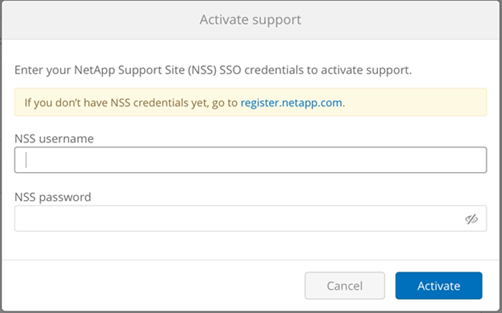

Activating support entitlement and accessing support Edit on GitHub Request doc changes
Updated
Once you have access to Cloud Volumes Service shortly after subscribing in AWS marketplace, it is strongly recommended that you activate support entitlement. Activating support entitlement enables you to access technical support over online chat, web ticketing system, and phone.
The default support level is self-service until serial number activation and registration is completed.
Activating support entitlement
During the initial subscription process with Cloud Volumes Service for AWS, your cloud volumes instance generates a 20-digit NetApp serial number that starts with "930". The NetApp serial number represents the Cloud Volumes Service subscription associated to your AWS account. You must register the NetApp serial number to activate support entitlement. We offer 2 options for support registration:
-
Current NetApp customer with existing NetApp Support Site (NSS) SSO account
-
New NetApp customer with no existing NetApp Support Site (NSS) SSO account
Option 1: Current NetApp customer with existing NetApp Support Site (NSS) SSO account
-
Navigate to the Cloud Volumes Service URL, or access this service through the NetApp Cloud Central portal. Then login with your NetApp Cloud Central credentials.
-
Display your NetApp serial number by selecting Support in the Cloud Volumes Service user interface (UI).

-
In the Support page, verify that your Support status shows
Not registered.
If you do not see the Support status and your NetApp serial number, refresh the browser page.
-
Click Activate support to register your NetApp serial number:
-
If you have an NSS account, enter your NSS credentials (username and password) in the Activate support page and click Activate to activate support entitlement for your NetApp serial number.
 -
If you are an existing NetApp customer, but you do not have NSS SSO credentials, go to the NetApp Support Registration site to create your account first. Then return here to register with your NSS credentials.
-
If you are a new NetApp customer, see the instructions for Option 2 below.
-
After your NetApp serial number is activated, the Support page shows the status Registered, indicating that you have activated support entitlement.
This is a one-time support registration for the applicable Cloud Volumes Service serial number. Any new Cloud Volumes Service subscription and subsequent new serial number requires support activation as well. If you have any questions or problems with support registration, contact us at cvs-support@netapp.com.
Option 2: New NetApp customer with no existing NetApp Support Site (NSS) SSO account
-
Navigate to the Cloud Data Services Support Registration page to create an NSS account.
-
Select I am not a registered NetApp Customer and the New Customer Registration form is displayed.

-
Complete the required information on the form:
-
Enter your name and company information.
-
Select Cloud Volumes Service as the Product Line and Amazon Web Services as the Cloud Service Provider.
-
Enter your NetApp serial number and AWS Customer ID from the Cloud Volumes Service Support page into the next two fields.
-
Click Submit Registration.
-
-
You will receive a confirmation email from your submitted registration. If no errors occur, you will be re-directed to a “Registration Submitted Successfully” page. You will also receive an email within an hour stating that “your product is now eligible for support”.
-
As a new NetApp customer, you also need to create a NetApp Support Site (NSS) user account for future support activations and for access to the support portal for technical support chat and web ticketing. Go to the NetApp Support Registration site to perform this task. You can provide your newly registered Cloud Volumes Service serial number to expedite the process.
This is a one-time support registration for the applicable Cloud Volumes Service serial number. Any new Cloud Volumes Service subscription and subsequent new serial number requires support activation as well. If you have any questions or problems with support registration, contact us at cvs-support@netapp.com.
Obtaining support information
NetApp provides support for Cloud Volumes Service in a variety of ways. Extensive free self-support options are available 24x7, such as knowledgebase (KB) articles or the NetApp community. The Cloud Volumes Service subscription purchased from the AWS SaaS marketplace includes software warranty support that includes technical support chat, email, phone, or web ticketing. You must activate support for each NetApp serial number in order to use these non self-service support options. A NetApp Support Site (NSS) SSO account is required for chat and web ticketing along with case management.
You can access support options from the Cloud Volumes Service UI by selecting the Support tab from the main menu. The support options available to you depend on whether you are in Trial mode or Subscription mode.
Self support
These options are available in Trial mode and are available for free 24x7:
-
Knowledge base
Selecting the links in this section takes you to the NetApp Knowledgebase, where you can search for articles, How-to’s, FAQ’s, or Break Fix information related to Cloud Volumes Service. -
User manual
Selecting the Click here link takes you to the Cloud Volumes Service for AWS documentation center. -
Communities
Selecting the Click here link takes you to the Cloud Volumes Service community, where you can connect with peers and experts. -
Email
Selecting the Click here link in the Feedback section initiates an email to support through cvs-support@netapp.com. This a great place to ask general questions about service, provide feedback and suggestions, or seek assistance for onboarding related problems.
Subscription Support
In addition to the self-support options above, if you have a Cloud Volumes Service paid subscription, you can work with a NetApp Support Engineer to resolve any issues.
Once your Cloud Volumes Service serial number is activated, you can access NetApp technical support resources by any of the following methods. You must have an active Cloud Volumes subscription to use these support options.
-
Chat
This will open a support ticket as well. -
Support Ticket
Select Cloud Data Services > Cloud Volumes Service AWS -
Phone
For P1 issues on original call or existing tickets
You can also request sales support by clicking on the Contact sales link.
Your Cloud Volumes Service serial number is visible within the service from the Support menu option. If you are experiencing issues accessing the service and have registered a serial number with NetApp previously, you can contact cvs-support@netapp.com for assistance. You can also view your list of Cloud Volumes Service serial numbers from the NetApp Support Site as follows:
-
Login to mysupport.netapp.com.
-
From the Products > My Products menu tab, select the Product Family SaaS Cloud Volume to locate all your registered serial numbers:
Obtaining support for Cloud Backup Service beta feature
You must have accepted the terms and conditions for using the Cloud Backup Service beta software. Because this is a beta feature, all questions or technical support issues related to Cloud Backup Service must be directed through email at cvs-support@netapp.com. A NetApp engineer will then assist with any problems you are experiencing.
Deactivating support
If you ever need to deactivate support for your subscription, click Deactivate support from the Support page, type deactivate as prompted, and click Deactivate support again to confirm.
|
NetApp recommends that you do not deactivate support for your subscription unless you are certain that you no longer need the service. If you mistakenly deactivated support, you can create a web ticket to reactivate the subscription. |